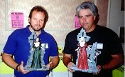
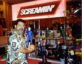
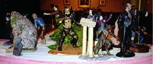

Monster Modelfest 1996 Show Review
Review by:
Ed Bowkley (ebowkley@webspan.net)
Photos by:
Ed Bowkley (ebowkley@webspan.net)
Bob Wilkie (wilkie@adp.uchc.edu)
Paul Antonelli (nerv@tiac.net)
he weekend of August 24th and 25th, just outside of Boston at the Tara Sheraton Castle Hotel in Framingham, Mass. A little known model show took place. Paul Antonelli's The Character Shop ran the fourth edition of the Monster Modelfest! And let me tell ya'... Keep your eyes open for next years show because if you don't I'm gonna scarf up all those bargains again!! Although this show is on a smaller scale with l277 fans and 100 dealers tables dominated by kits! It is the friendly, laid back attitude that I really enjoyed! I got a chance to actually talk to guests, dealers and kit builders that I haven't had a chance to in a long, long time! And I didn't hear any dealers complaining about going home with less kits and more cash at shows end either!
 |
 |
 |
 |
 |
 |
Antonelli |
Stevens |
McComas |
Rochon |
Munro |
Fisher |
Various up and coming kit manufacturers were showing off some really cool new kits that are now a part of my ever growing collection. Although I know of only one dealer who did not stay for Sunday (he will be kicking hisself in the butt since no less than 7 people, cash in hand, were looking to buy his kits. So I was able to help fill in the void for those people nicely!! Thanks R.F.T.G.!) Let me tell ya' this show surpassed everyones expectations! The guests were very outgoing and Friendly. Seeing Caroline Munro in her 1 piece bathing suit Sunday morning on her way to the indoor pool made me realize that there really is a God! David Fisher of AFM fame once again shared his knowledge with a legion of fans. One tip in particular will be in my We The People article in the December issue of Kitbuilders so look for it there! Brinke Stevens, Debbie Rochon and a horde of Scream Queens were there looking more beautiful than ever, and everyone's favorite "undead" John Russo and Bill Hinzman were on hand to help keep Night of the Living Dead alive!!
|  |  |
 |
But this shows main stars were the kits and believe me they didn't disappoint! Python Press, Model Citizen, 3D, Alternative Images, Von Then, Screamin', and a host of others were there with loads of new kits to get your juices flowing. Kits from vintage Aurora to present day models were to be had at prices that made grown men drool! How The Character Shop can sell kits at such low prices boggles the mind!! My favorite part of the show was the auction. All proceeds were given to the American Lung Assn.(A very worthy cause!!) All I can tell you about the auction was that Kevin Clements Meadowlands Mafia really scored big time!! Movie posters and photos signed by the great Ray Harryhausen, vintage and hard to find kits were practially given away (I got about 10 kits myself) add into the mix an hourly door prize and raffles... Well lets just say I don't think anyone went home empty handed. There was also a Poolside BBQ where the fans got a chance to rub elbows with the guests at the outdoor pool...
|  |
Now what you've been waiting for the results of the model contest. Now it was on the small side with only 75 kits entered but there wasn't a shortage of talented people showing some great looking kits!! Here now is a small rundown of the winners:
|
All in all a good time was had by all. There are no dates set in stone for next year but I am told that the show is moving back to Boston and will be held in September. The only problem I can forsee for Paul and his crew (even you Charlie!) is... What are they gonna do with all the people who are going to show up at the doors when word gets out.. Hmmmm! Maybe I should keep this show to my greedy little self.. NAHH!!! It's too good not to share with my fellow Gremlins!
There are some neat pictures from the show so we put together the following photo index with links to the pics:
- What a lovely pair... not the guys from Alternative Images the kits!
- Dave Fisher,Caroline Munro,and show Promoter Paul Antonelli
- Richard and Jacques from 3D have their hands full of some great resin
- Smile Rich some folks are still Screamin' about you kits
- 0ne of my Favorites Model Citizens Sting from the movie Dune
- Enteries in the model contest
- Enteries in the model contest
- Debbie Rochon
- Falchion Iria and Zeiram on a David Fisher Base
- Brinke Stevens
- Screamin's kits
- Sub Mariner and Morlock
- Metaluna Mutant, War of the Worlds Martian, Wolfman, Phantom of the Opera
- Central Castings Dark Muse
- Model Citizens' Sting from Dune
- Needfull Things' Pulp Fiction
- Vision Predator and Bruce Lee
- Goro
- Halcyon Alien with Egg
- Cellar Casts Amazon's Pet
- Creative Designs and Castings, Unlimited's Infestation
- Chris Cavalier
- Robot woman from the Anime "Ghost in the Shell"
- David Fisher
- Scoop's Catwoman
- Gordy Dutt at his KitBuilders Magazine booth
- Zeiram 2 (anyone know who makes it?)
- Night's Children
- Unknown Booth (anyone know?)
- Sky-Tracker
{kind=link}
{kind=link}
{kind=link}
{kind=link}
{kind=link}
{kind=link}
{kind=link}
{kind=link}
{kind=link}
{kind=link}
{kind=link}
{kind=link}
{kind=link}
{kind=link}
{kind=link}
{kind=link}
{kind=link}
{kind=link}
{kind=link}
{kind=link}
{kind=link}
{kind=link}
{kind=link}
{kind=link}
{kind=link}
{kind=link}
{kind=link}
{kind=link}
{kind=link}
{kind=link}
Note: We did our best to identify the kits in the pictures, but please let us know if we made any mistakes so we can correct them. Also, if we missed getting a picture of your kit please send us one so we can add it to this review. Thanks!
The Gremlins in the Garage webzine is a production of Firefly Design. If you have any questions or comments please get in touch.
Copyright © 1994-1997 Firefly Design.